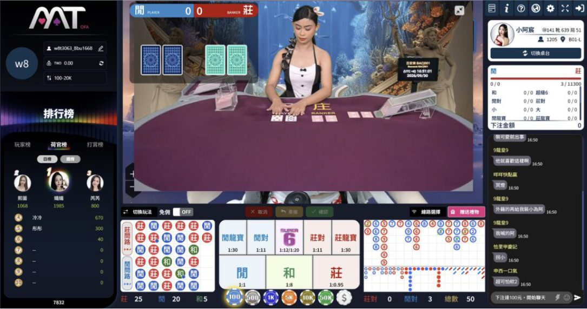
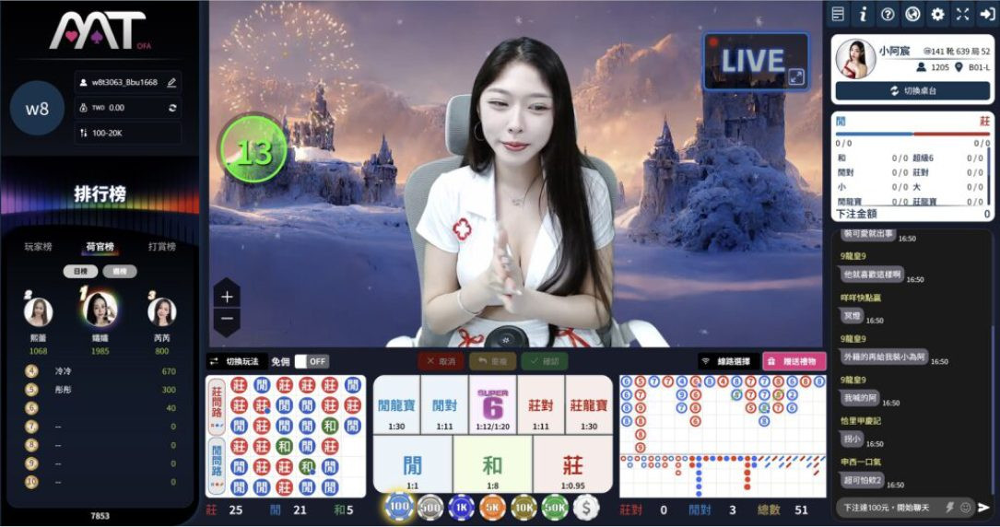
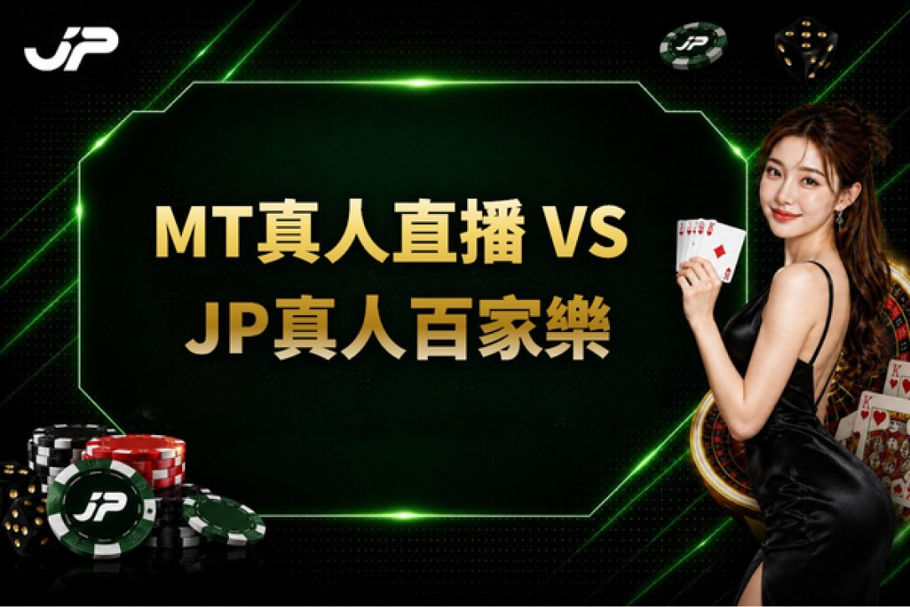
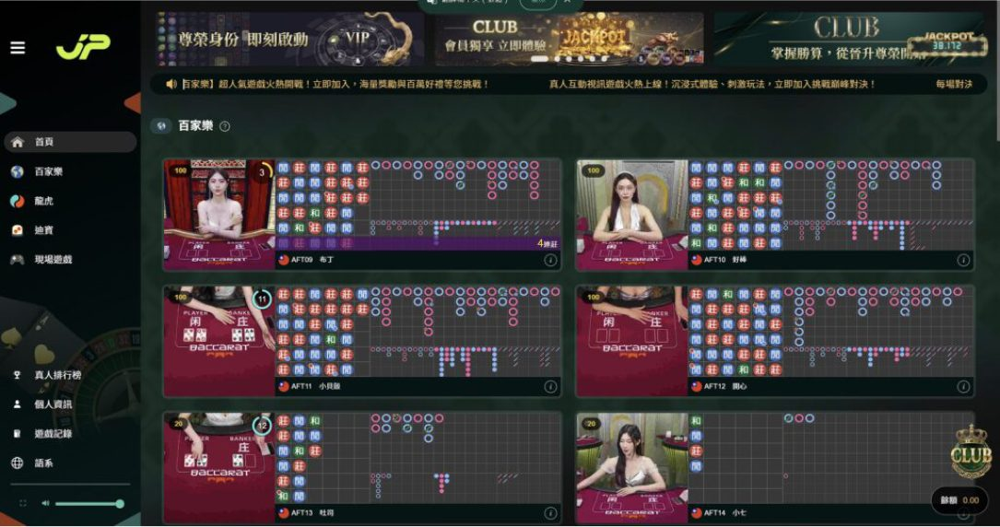
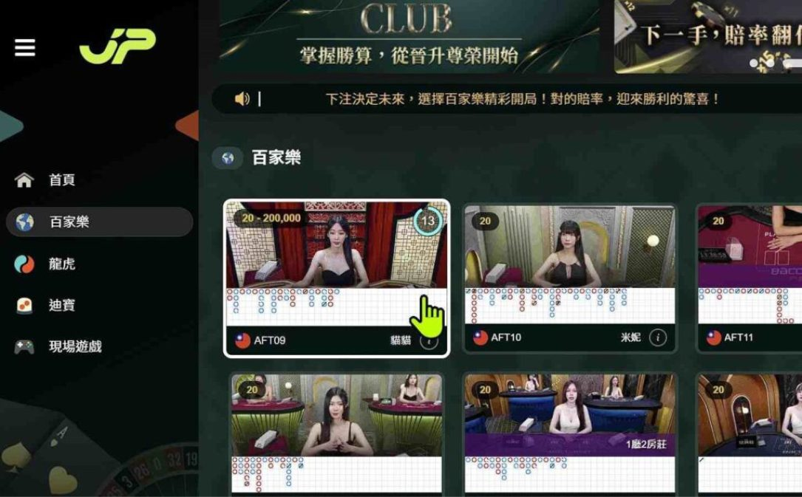
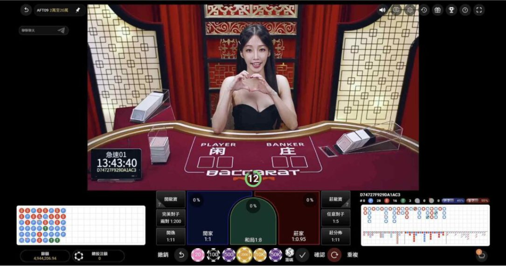
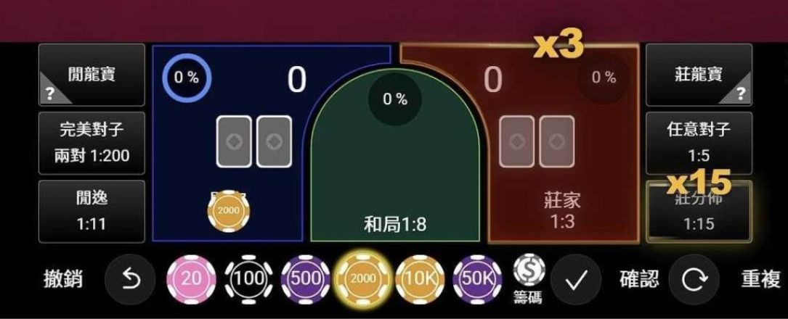
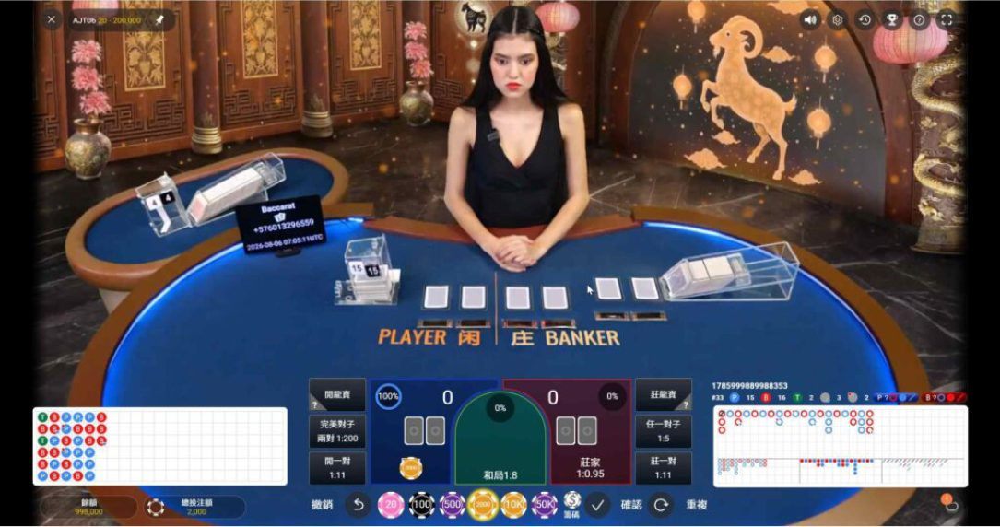
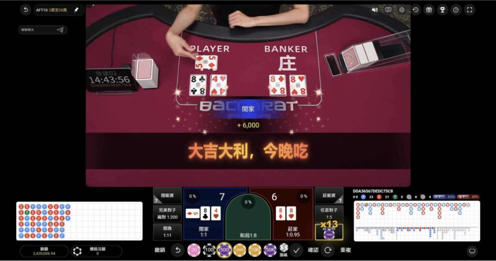

MT荷官不發牌了？MT荷官消失後改真人直播，JP真人百家樂試玩比較
MT荷官不發牌了? 先前 MT荷官消失 後已回歸，目前 MT真人直播 改以聊天互動、陪玩家看牌路為主。本文解析LIVE真人發牌與切換方式，並比較 JP真人百家樂 介面及 JP真人試玩 流程，一次掌握兩者直播差異。
MT荷官不發牌了？
目前MT畫面仍保留莊、閒、和等百家樂投注區，以及珠盤路、大路等路單資訊，但真人直播主畫面的呈現方式已有所不同。部分介面可以看到牌面與莊閒結果，另一種畫面則以荷官直接面對鏡頭為主，右側同步加入即時聊天室。因此「MT荷官不發牌了?」更適合理解為部分MT真人直播的呈現方式改變，而不是所有真人百家樂內容都已停止發牌。
MT荷官直播現況
先前受到玩家關注的MT荷官消失，目前真人荷官已重新回到MT直播畫面，不過回歸後的互動方式與過去不同。現在荷官主要不負責實際發牌，而是以直播聊天、回應玩家與陪伴互動為主，玩家可以一邊查看百家樂路單與莊閒結果，一邊和荷官討論牌局走勢、觀察牌路變化。也因此「MT荷官不發牌了?」確實成為近期玩家關注的變化，而目前MT真人直播的重點已更偏向「荷官互動聊天＋陪玩家一起看牌路」，實際真人百家樂發牌畫面則需透過LIVE視窗另外觀看。
| 回歸現況 | MT真人介面 |
|---|---|
| 真人荷官 | MT荷官已重新出現在真人直播畫面 |
| 直播方式 | 以荷官面對鏡頭與聊天室互動為主 |
| 百家樂資訊 | 保留莊、閒、和投注區與百家樂路單 |
| 其他資訊 | 介面可查看荷官資訊與排行榜 |
| 發牌畫面 | 真人百家樂牌桌需透過LIVE視窗查看 |
| 主要變化 | 直播互動與真人發牌改為分開呈現 |
MT荷官消失後變成MT真人直播
MT荷官消失後重新回到遊戲介面，目前部分MT真人直播已不再將真人百家樂桌面作為唯一視覺重心，而是以荷官直接面對鏡頭為主，右側加入即時聊天室，底部繼續保留莊、閒、和等百家樂下注區與路單資訊，同時設有「LIVE」真人桌面視窗。整體更接近「真人直播互動＋百家樂遊戲介面」同步呈現，也讓MT真人遊戲的觀看方式出現明顯變化。
改以直播陪玩形式出現
目前MT真人直播更強調荷官與聊天室玩家之間的即時互動，荷官直接出現在直播主畫面，玩家則可透過聊天室參與互動，同時查看百家樂路單與下注資訊。相較於傳統真人百家樂將實體牌桌與發牌流程放在主要視角，MT部分畫面更偏向直播聊天與陪伴式互動，讓MT荷官消失後的回歸不只是重新出現真人，也帶來不同的直播觀看方式。

| 直播特色 | 目前呈現方式 |
|---|---|
| 直播主畫面 | 荷官直接面對鏡頭進行直播 |
| 即時互動 | 玩家可透過聊天室參與互動 |
| 百家樂資訊 | 同步保留牌路與下注資訊 |
| 觀看重點 | 較偏向直播聊天與陪伴式互動 |
| 主要變化 | MT荷官回歸後出現不同的直播觀看方式 |
百家樂牌局使用DG真人畫面
MT真人直播主畫面以荷官互動為主，而百家樂牌局則可透過右上方「LIVE」視窗查看。將LIVE畫面展開後，可以看到真人荷官、實體牌桌以及PLAYER、BANKER牌區，讓玩家在觀看直播互動的同時掌握真人百家樂牌局進度。目前畫面可以確認的重點是「MT荷官直播互動＋LIVE真人百家樂桌面」的組合形式；至於真人桌面的品牌來源，現有畫面不足以明確確認，因此不直接認定為DG真人。

| LIVE功能 | 畫面內容 |
|---|---|
| LIVE視窗 | 位於MT真人直播介面右上方 |
| 真人桌面 | 展開後可查看真人荷官與實體百家樂桌 |
| 牌局資訊 | 可看到PLAYER、BANKER牌區 |
| 觀看方式 | 直播互動與真人百家樂桌面分開呈現 |
| 品牌來源 | 目前畫面不足以確認真人桌面的實際品牌 |
MT真人直播怎麼切換真人發牌畫面？
過去的MT真人荷官直接負責百家樂發牌，玩家觀看荷官時，也能同步看到洗牌、開牌與結果判定。現在則改以直播陪玩為主，MT荷官出現在直播畫面中，負責陪伴玩家觀看遊戲與進行互動，實際牌局則由另外的真人桌台畫面呈現。這種變化讓MT百家的直播形式與過去明顯不同，玩家不再只是觀看MT荷官直接發牌，而是同時接觸荷官直播與真人百家樂牌局兩種內容。對習慣舊版MT百家樂的玩家來說，最大的適應重點就是分辨直播陪玩畫面與實際牌局畫面的功能。
切換真人百家樂桌面
進入MT真人直播後，右上方可以看到「LIVE」小視窗，透過旁邊的放大功能即可展開真人百家樂桌面。相較於主畫面以荷官聊天互動為主，LIVE視窗更集中呈現實體牌桌與莊閒牌區，不需要離開目前的遊戲介面，就能同步查看真人桌面與牌局進行狀況，也讓MT荷官消失後的新直播形式多了一種觀看方式。
| 切換功能 | 畫面內容 |
|---|---|
| LIVE視窗 | 右上方提供真人百家樂LIVE小視窗 |
| 桌面切換 | 點選放大功能即可展開真人百家樂桌面 |
| 真人牌桌 | 可查看實體牌桌與PLAYER、BANKER牌區 |
| 牌局觀看 | 透過LIVE視窗掌握真人發牌與牌局進度 |
| 切換特色 | 不需離開目前遊戲介面即可查看真人桌面 |
直播互動與真人發牌分開呈現
目前MT真人直播較明顯的特色，就是荷官互動與真人百家樂桌面採取不同視窗呈現。主畫面著重荷官面對鏡頭與聊天室互動，百家樂投注區、路單與莊閒資訊則持續保留；需要觀看實際真人桌面時，再透過LIVE視窗查看牌局。這種介面安排也能解釋部分玩家為什麼會產生「MT荷官不發牌了?」的疑問，實際改變主要集中在真人直播與百家樂桌面的呈現方式。

| 介面區域 | 呈現內容 |
|---|---|
| 直播主畫面 | 以荷官面對鏡頭與聊天室互動為主 |
| 投注介面 | 保留莊、閒、和投注區與百家樂路單 |
| 真人牌桌 | 透過LIVE視窗另外查看實際百家樂桌面 |
| 發牌畫面 | 需切換LIVE視窗才能觀看真人發牌 |
| 主要差異 | 直播互動與真人發牌採不同視窗呈現 |
MT真人直播 VS JP真人百家樂
MT真人直播與JP真人百家樂都有真人視訊、百家樂投注區與路單資訊，也都具備真人互動功能，主要差異在於真人荷官、互動與發牌畫面的整合方式。MT目前以荷官面對鏡頭與聊天室互動作為主畫面，若要觀看實際百家樂牌桌與發牌過程，需另外透過LIVE視窗切換；JP則將真人荷官、實體牌桌與PLAYER、BANKER開牌過程直接呈現在主要畫面，玩家可以更直觀地掌握真人互動與牌局進度。

MT真人直播
目前MT真人直播以荷官直播與聊天室互動作為主要視覺重點，底部則保留莊、閒、和等投注區及百家樂路單。若玩家想查看實際真人牌桌與發牌過程，需要再透過右上方LIVE視窗切換觀看，因此直播互動與真人發牌並非集中在同一個主畫面。這也是MT荷官消失後回歸所出現的明顯介面變化，並讓部分玩家產生「MT荷官不發牌了?」的疑問。
| MT真人直播 | |
|---|---|
| 主要畫面 | 荷官直播＋聊天室即時互動 |
| 投注資訊 | 保留莊、閒、和投注區與百家樂路單 |
| 真人發牌 | 需透過右上方LIVE視窗切換查看真人牌桌 |
| 畫面呈現 | 直播互動與真人百家樂牌桌分開呈現 |
| 觀看方式 | 主畫面看荷官互動，LIVE視窗看實際發牌 |
| 目前變化 | MT荷官回歸後，部分介面改以直播互動為主要畫面 |
JP真人直播
JP真人百家樂同樣具備真人互動功能，但呈現方式更集中在實體百家樂桌面。進入桌台後即可直接看到真人荷官、PLAYER與BANKER牌區及開牌過程，下方同步提供莊、閒、和等投注區與百家樂路單，不需要另外切換視窗才能查看真人發牌。想先熟悉真人桌面、牌局資訊與操作流程，也可以透過JP真人試玩了解整體介面。
| JP真人百家樂 | |
|---|---|
| 主要畫面 | 真人荷官＋實體百家樂牌桌 |
| 真人互動 | 可觀看真人荷官並進行互動 |
| 真人發牌 | 主畫面直接觀看真人發牌與開牌 |
| 牌局資訊 | 直接顯示PLAYER、BANKER牌區與開牌過程 |
| 投注資訊 | 提供莊、閒、和投注區及百家樂路單 |
| 畫面呈現 | 荷官、牌桌與開牌集中在主要畫面 |
| 試玩體驗 | 可透過JP真人試玩熟悉桌面與操作流程 |
百家樂直播優勢比較
綜合介面差異來看，MT真人直播與JP真人百家樂都能觀看真人荷官、進行互動並查看百家樂相關資訊，真正的差異在於「是否需要切換視窗觀看發牌」。MT將直播互動與真人百家樂牌桌分開呈現，觀看發牌時需要透過LIVE視窗切換；JP則把真人荷官、互動、實體牌桌與開牌流程集中在主要遊戲畫面。若想了解這種介面差異，可以先透過JP真人試玩熟悉JP真人百家樂的真人桌面與開牌流程，再比較兩種直播呈現方式。
| 比較項目 | MT真人直播 | JP真人百家樂 |
|---|---|---|
| 直播畫面 | 荷官直播與聊天互動為主 | 真人荷官與實體牌桌為主 |
| 真人互動 | 支援直播聊天室互動 | 支援真人荷官互動 |
| 真人發牌 | 需透過LIVE視窗切換觀看 | 主畫面直接觀看真人發牌 |
| 畫面整合 | 互動直播與真人牌桌分開呈現 | 荷官、牌桌與開牌集中呈現 |
| 百家樂資訊 | 提供莊、閒、和與牌路資訊 | 提供莊、閒、和與牌路資訊 |
| 觀看差異 | 看真人發牌需另外切換視窗 | 不用切換即可查看真人牌桌 |
| 試玩體驗 | 以直播互動與LIVE牌桌切換為主 | 可透過JP真人試玩熟悉桌面流程 |
JP真人試玩怎麼開始？
想進一步了解真人百家樂桌面的操作方式，可以透過JP真人試玩熟悉介面。進入JP真人大廳後，可以先瀏覽不同百家樂桌台與路單，再選擇想查看的桌台；進入後即可看到真人荷官、PLAYER與BANKER牌區、下注籌碼、莊閒和投注區及路單資訊。第一次進行JP真人試玩時，可以先熟悉桌台介面、下注區與開牌流程，再逐步了解JP真人百家樂的操作方式。
JP真人試玩步驟
一分鐘輕鬆上手！跟著以下 6 大步驟，立即體驗最流暢、真實的 JP真人百家樂。進入JP真人大廳並選擇荷官直播間，即可自由瀏覽各個JP真人百家樂的桌台與即時路單。挑選想體驗的桌台後，確認好莊、閒、和等投注區域，就能依循百家樂規則觀看真人現場開牌，並即時查看莊閒牌面與最終的牌局結算結果。
STEP 1：進入JP真人大廳

STEP 2：瀏覽百家樂桌台與路單

STEP 3：選擇想體驗的真人桌台

STEP 4：確認莊、閒、和等投注區

STEP 5：觀看真人百家樂開牌

STEP 6：查看莊閒牌面與牌局結果

立即體驗JP真人試玩
目前MT荷官消失後已再次看到真人荷官出現在遊戲介面，但部分MT真人直播更突出聊天室與荷官互動，因此也讓玩家開始討論「MT荷官不發牌了?」。如果偏好直接觀看真人荷官、實體牌桌與莊閒開牌流程，可以進一步了解JP真人百家樂的桌面呈現方式。透過JP真人試玩可先熟悉百家樂路單、投注區、真人桌面與開牌流程，再依自己的娛樂預算選擇適合的體驗方式；想感受以真人荷官與實體牌桌為主的遊戲介面，也可以進一步進入JP真人百家樂體驗試玩。
免費試玩常見問題 FAQ
Q1：MT荷官不發牌了？
目前「MT荷官不發牌了?」比較適合理解為部分真人直播介面的呈現方式有所改變，而不是所有真人內容都已停止發牌。先前受到玩家關注的MT荷官消失後，目前真人荷官已再次出現在MT畫面，只是部分MT真人直播更強調荷官面對鏡頭與聊天室互動，同時保留百家樂投注區、路單與LIVE真人桌面。
Q2：MT荷官消失後為什麼變成直播聊天？
MT荷官消失後重新出現的部分介面，將真人荷官、即時聊天室與百家樂遊戲資訊整合在同一畫面，因此整體更接近MT真人直播互動形式。目前較適合描述為偏向直播聊天與玩家互動，而不能僅依畫面認定所有MT真人桌台都已全面改成陪玩模式。
Q3：MT真人直播還能看到真人百家樂發牌嗎？
MT真人直播右上方設有「LIVE」真人桌面視窗，展開後可以看到實體百家樂桌、真人荷官以及PLAYER、BANKER牌區。因此荷官聊天互動與真人發牌桌面目前採取分開呈現的形式，玩家仍可透過LIVE視窗查看真人百家樂牌局。